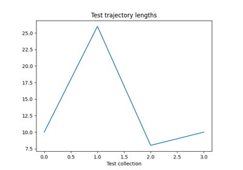
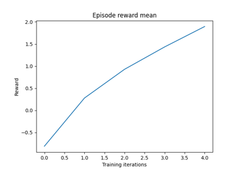
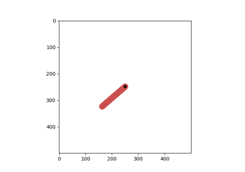
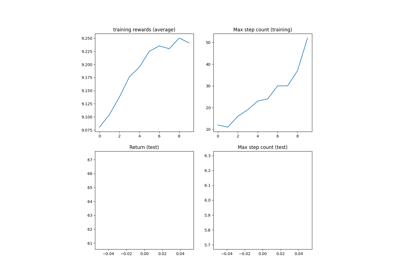
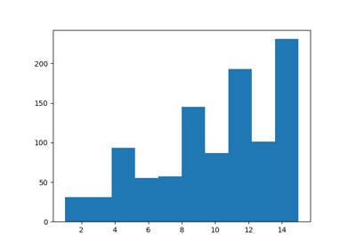
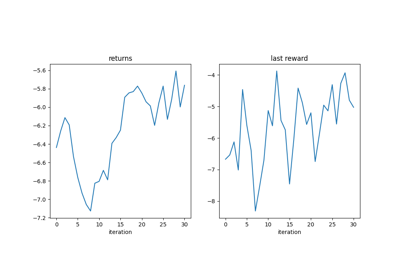
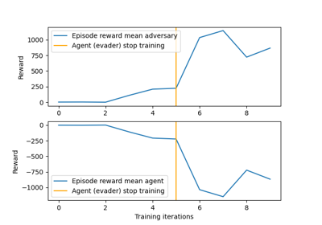
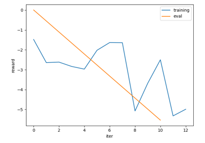

README Tutos¶
Check the tutorials on torchrl documentation: https://pytorch.org/rl



Recurrent DQN: Training recurrent policies
Recurrent DQN: Training recurrent policies


Multi-Agent Reinforcement Learning (PPO) with TorchRL Tutorial
Multi-Agent Reinforcement Learning (PPO) with TorchRL Tutorial

TorchRL envs

Reinforcement Learning (PPO) with TorchRL Tutorial
Reinforcement Learning (PPO) with TorchRL Tutorial

Using Replay Buffers



Pendulum: Writing your environment and transforms with TorchRL
Pendulum: Writing your environment and transforms with TorchRL

Competitive Multi-Agent Reinforcement Learning (DDPG) with TorchRL Tutorial
Competitive Multi-Agent Reinforcement Learning (DDPG) with TorchRL Tutorial

TorchRL objectives: Coding a DDPG loss
TorchRL objectives: Coding a DDPG loss